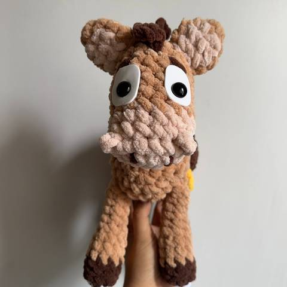
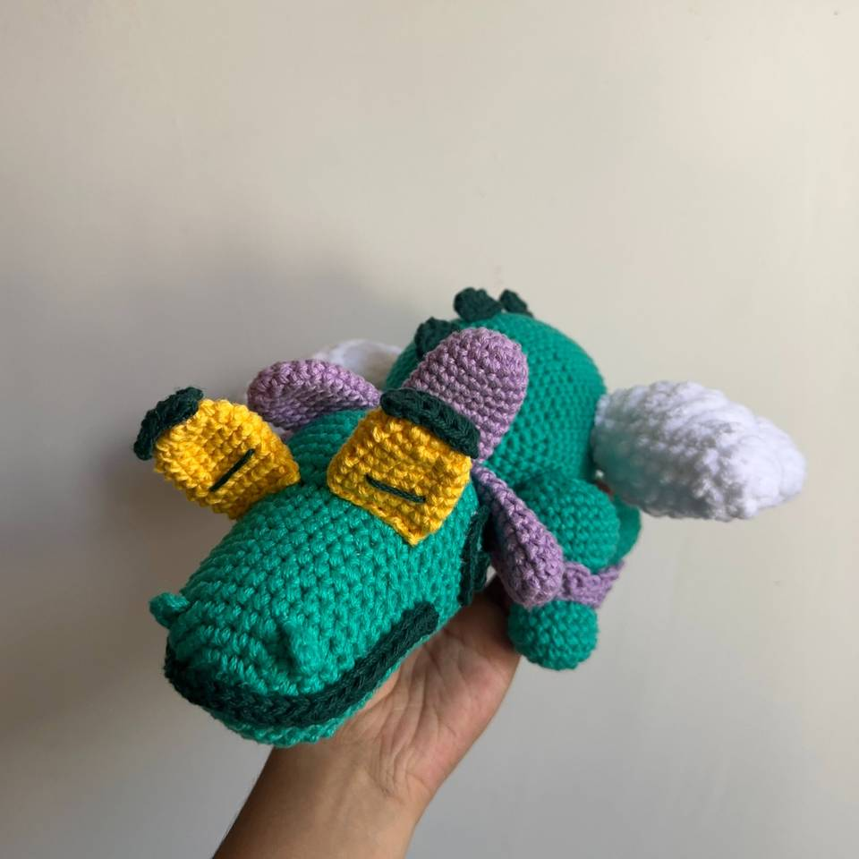
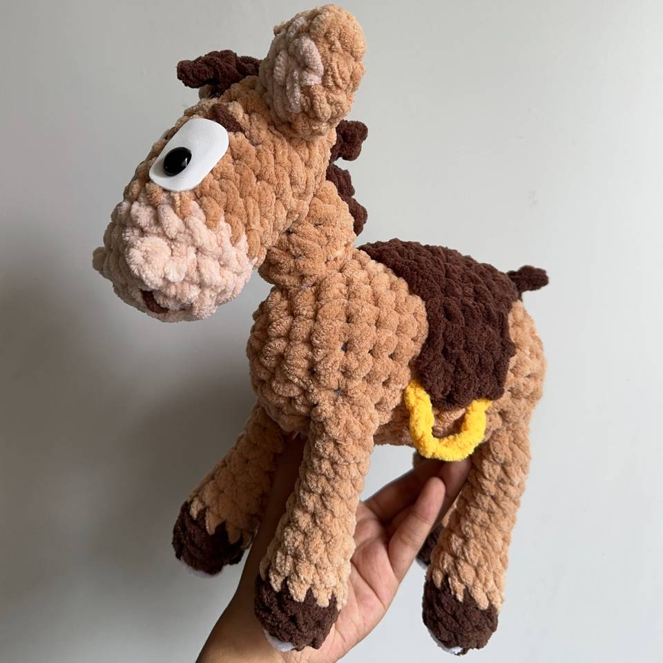
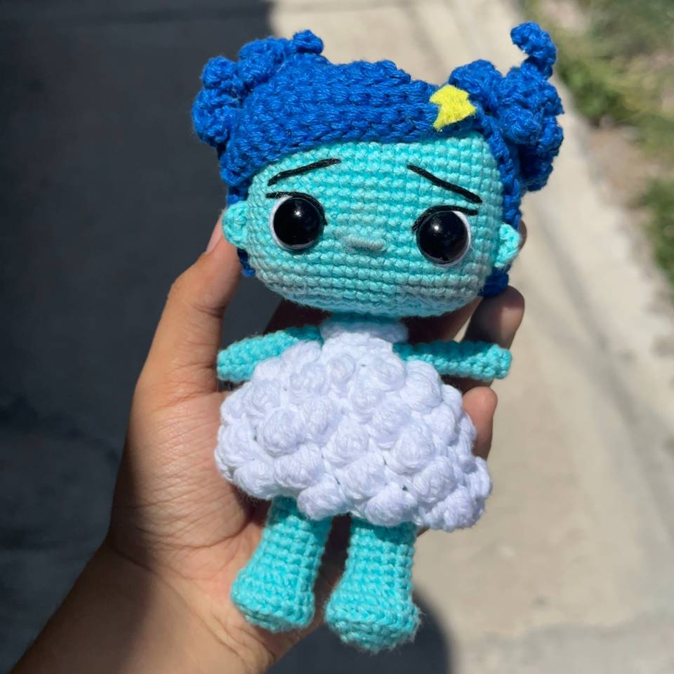

Tejido a mano
Conoce las texturas, colores y detalles visibles en las fotografías del taller.
Crochet artesanal · Piezas hechas a mano
Explora fotografías de las creaciones de Jaz Jaz Crochet y prepara una consulta sobre una pieza o una idea personalizada.


Fotografías de piezas elaboradas a mano en el taller.
Cómo trabajamos
Un proceso sencillo y transparente: ver piezas reales, acordar el diseño y tejer tu encargo con calma.
Conoce las texturas, colores y detalles visibles en las fotografías del taller.
El formulario prepara una solicitud que puedes compartir por el canal disponible.
Las imágenes del sitio corresponden a piezas elaboradas en el taller; no usamos fotos de catálogo genéricas.
Catálogo
Trabajos realizados que muestran el estilo del taller. Los diseños se adaptan a los colores y detalles que acuerdes antes de empezar.

Pieza fotografiada
Figura tejida con detalles amarillos, lavanda y blancos.

Pieza fotografiada
Peluche tejido en tonos café y crema, con detalles oscuros.
Pieza fotografiada
Muñeca tejida con cabello lavanda y vestido verde.

Pieza fotografiada
Muñeca tejida con cabello azul y vestido blanco.
Los títulos describen visualmente las fotografías. Puedes editar nombres y añadir información de producto o precios cuando estén confirmados.
Sobre nosotros
Jaz Jaz Crochet comparte aquí fotografías de sus creaciones tejidas. Cada imagen permite apreciar colores, texturas y detalles hechos a mano.
¿Tienes una idea o quieres consultar por una pieza de la galería? Prepara una solicitud y compártela por Facebook.
Galería
Selecciona una fotografía para verla en grande y apreciar sus detalles.
Pedidos personalizados
Comparte una idea o indica qué pieza de las fotografías te interesa. El formulario prepara un resumen para que lo envíes por Facebook.
Cuéntanos qué pieza quieres, para qué ocasión y qué detalles te importan.
Describe colores, tamaño, uso y cualquier otro detalle que quieras consultar.
Revisa la información y copia o descarga el texto preparado en tu navegador.
El sitio abre la página de Facebook para que envíes la consulta directamente.
Completa los campos y genera un resumen. No se envía automáticamente: lo copias y lo compartes por Facebook, el único canal confirmado por ahora.
Cópialo, abre Facebook y pégalo en el chat de la página para enviar tu solicitud.
Contacto
Las consultas, cotizaciones y avances de pedido se atienden por Facebook. Escríbenos por ahí y te responderemos por ese mismo medio.
Por ahora el único canal confirmado es Facebook. El teléfono, WhatsApp, correo y otras redes se publicarán aquí cuando estén disponibles.
Puedes compartir la pieza que te interesa, los detalles que imaginas y cualquier duda.
Preparar mi solicitud